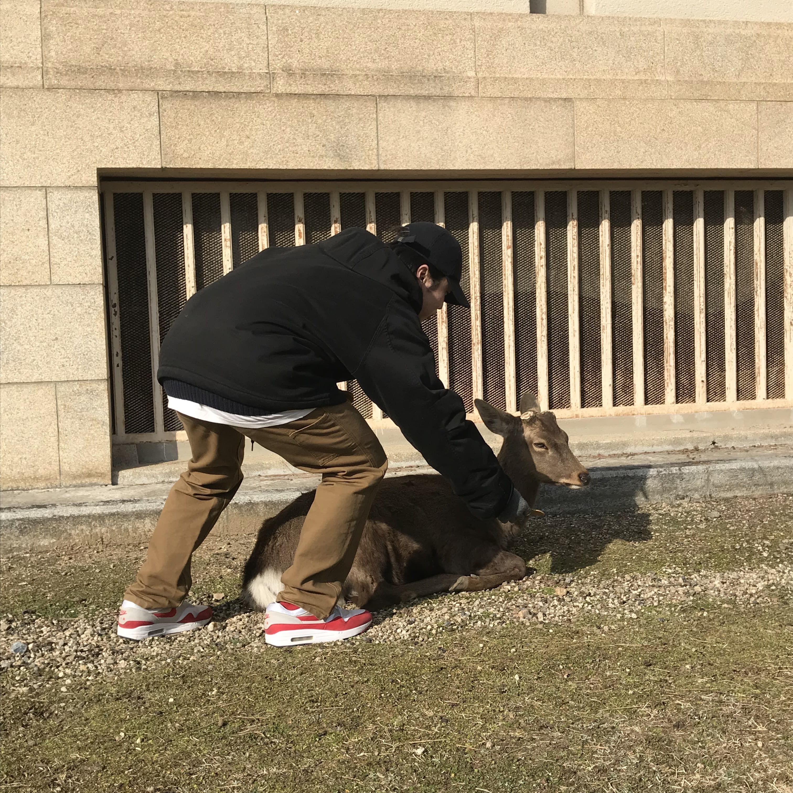

「나라 사슴 공원」
 여기야!
여기야!
2019년 2월 10일 군대를 마치고 친구와 함께 일본 오사카 여행을 가기로 했다. 여러곳을 갔지만 그중 나라 사슴 공원이 가장 기억에 남는다.
「가는 길」

숙소에서 사슴 공원까지 지하철(킨테츠 선)로 40분? 정도 걸렸는데 대중교통인데도 불구하고 6000원 정도가 들었다. 오사카에 간다면 주유패스를 "꼭" 사도록 하자!
→주유패스(소리주의)
「먹어볼래?」

지하철을 타고 사슴공원이 있는 나라역에 도착했는데 사슴에게 줄 센베를 파는 상인들이 "매우매우" 많았다. 거기 있는 관광객들 모두가 센베를 하나씩 들고 다니길래 나와 친구도 각자 하나씩 사버렸다. 생긴건 별로였지만 냄새는 꽤 좋았다.
공원안으로 들어가자 생각보다 훨씬 많은 사슴에 당황했다. 어릴적 동물원에서 보던 사슴이 바로 내 눈앞에 그것도 한마리가 아닌 수백마리가 앞에 있는걸 보니 너무 신기했다. 센베과자를 얼른 내밀어 봤지만 별로 먹기가 싫었는지 한마리도 내쪽으로 오는 사슴이 없었다. 여행 블로그를 찾아봤을땐 그걸 들고 있기만 해도 사슴들이 달려든다고 했는데 배가 불렀는지 나한텐 눈길도 주지않았다.
「나좀 봐주라!😥」
과자를 쳐다도 보지않는 사슴들
아직 쌀쌀한 2월이라 그런지 사슴들이 많은 사슴들이 거의 움직이지 않고 가만히 앉아있거나 자고있었다.
하지만 그런 모습들도 내눈엔 그저 귀엽고 신기하게 보였다.
「나좀 봐주라!😥₂」
「가기전에」
내가 갔을때는 사슴들이 하나같이 뿔이 없어서 이상하게 생각했었는데 찾아보니 사슴은 봄에 뿔이 자라서 가을에 제일 커지는데 나라공원에서는 사람들의 안전과 수목보호를 위해 사슴뿔을 자른다고 한다. 관광객들은 시카노츠키리라는 행사를 통해 볼 수 있다.
또 호른을 불어 사슴을 불러모으는 행사도 한다고 하는데 호른을 불면 숲속에서부터 사슴들이 달려와 그 주위로 모인다고 하니 오사카 여행을 가고싶거나 계획중이라면 행사 일정을 알아보고 가면 좋을 것 같다.
자세한 내용은 🦌!